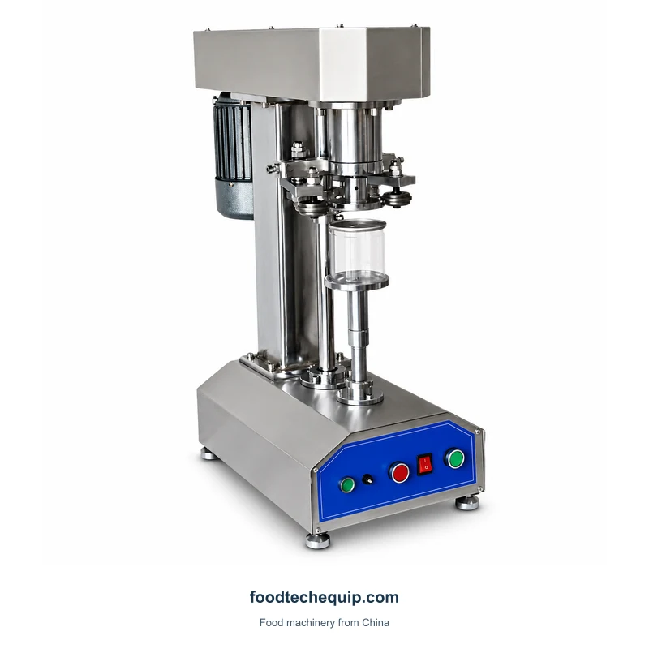

إغلاق العلب المعدنية بالدرز
آلة كهربائية لإغلاق العلب المعدنية بالدرز
آلة كهربائية لإغلاق العلب المعدنية بالدرز، مع مسند رأسي وعناصر تحكم أمامية. قارن التهيئات بحسب مقاس العلبة وشكلها.
عرض المعداتقارن آلات إغلاق العلب المعدنية بحسب جسم العلبة والغطاء المطابق وطريقة إسنادها خلال الإغلاق.
آلة كهربائية لإغلاق العلب المعدنية بالدرز، مع مسند رأسي وعناصر تحكم أمامية. قارن التهيئات بحسب مقاس العلبة وشكلها.
عرض المعدات
معدات لإغلاق العلب المعدنية بالدرز، متاحة بتهيئات دوّارة وأخرى غير دوّارة.
عرض المعدات
معدات إغلاق العلب المعدنية بالدرز على خط الإنتاج، بتهيئتي 200 و300.
عرض المعدات
آلة طاولة لإغلاق العلب المعدنية بالدرز، بتهيئة 160.
عرض المعدات
معدات إغلاق العلب المعدنية بالدرز بخيارات أرضية أو على طاولة أو بتصميم دوّار.
عرض المعدات
آلة كهربائية لإغلاق العلب المعدنية بالدرز، مع مسند رأسي وعناصر تحكم أمامية.
عرض المعداتجرّب كلمة رئيسية مختلفة أو امسح عوامل التصفية.
مطابقة توريد أجسام العلب ونهاياتها وتنسيق الرسومات ومتطلبات التماس. قارن أبعاد الحاوية مع ترتيب الدعم للتكوين المحدد.
تحديد كيفية فحص وقياس الطبقات النهائية باستخدام متطلبات مورد الحاوية لتنسيق العلبة والنهاية المقصود.
| منطقة التحديد | ماذا تقارن | ما الذي ينبغي تقديمه |
|---|---|---|
| تنسيق الحاوية | جسم العلبة والنهاية المتطابقة | رسم تنسيق المورد |
| ترتيبات العمل | دعم الحاويات في محطة الإغلاق | ارتفاع العلبة وتسلسل التعامل معها |
| التماس النهائي | تقييم الحزمة المغلقة | متطلبات التماس وطريقة التقييم |
استخدم نص العلبة ونهايتها المطابقة لتحديد مهمة الإغلاق. إذا كانت تعبئة المنتج أيضًا جزءًا من الاستفسار، فقم بوصف ذلك بشكل منفصل مع المادة والكمية وفتح الحاوية.